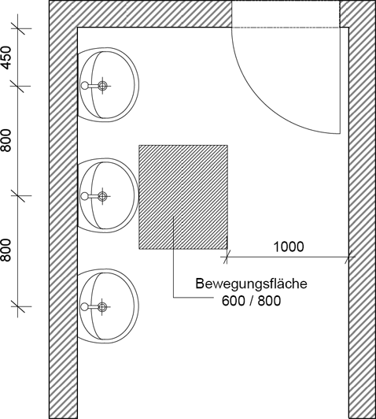

(1) Waschräume sind nach Art der Tätigkeit oder gesundheitlichen Gründen gemäß Kategorie A, B oder C vorzusehen:
(2) Werden keine Waschräume nach Absatz 1 benötigt, müssen in der Nähe der Arbeitsplätze und der Umkleideräume Waschgelegenheiten mit fließendem Wasser und geschlossenem Wasserabflusssystem zur Verfügung gestellt werden (Weglängen gemäß Punkt 5.2 Absatz 1). Sie müssen mit Mitteln zum Reinigen (z. B. Seife in Seifenspendern) und Trocknen der Hände (z. B. Einmalhandtücher, Textilhandtuchautomaten oder Warmlufttrockner) ausgestattet sein.
(3) In Waschräumen ist in Abhängigkeit der Nutzung eine wirksame Lüftung zu gewährleisten. Bei freier Lüftung (Fensterlüftung) sind die Mindestquerschnitte nach Tabelle 3 einzuhalten (weitere Informationen siehe ASR A3.6 "Lüftung"). Lüftungstechnische Anlagen sind so auszulegen, dass ein Abluftvolumenstrom von 11 m³/(h m²) erreicht wird.
Tabelle 3: Mindestquerschnitte für freie Lüftung von Waschräumen
| System | Freier Querschnitt der Lüftungsöffnung/en [m²/m² Grundfläche]* | |||||
| einseitige Lüftung | 0,04 | |||||
| Querlüftung** | 0,024 | |||||
| ||||||
(4) Um Feuchtigkeit wirksam abführen zu können, wird eine mechanische Entlüftung empfohlen, insbesondere bei Waschräumen mit Duschen. Dabei ist eine darauf abgestimmte Zuluftmenge zu gewährleisten.
(5) Wasch- und Umkleideräume sollen einen unmittelbaren Zugang zueinander haben. Sind Wasch- und Umkleideräume räumlich voneinander getrennt, darf der Weg zwischen diesen Sanitärräumen nicht durchs Freie oder durch Arbeitsräume führen. Eine leichte Erreichbarkeit zwischen Wasch- und Umkleideraum ist bei einer Entfernung von maximal 10 m auf gleicher Etage gegeben. Die Lufttemperatur dieses Weges muss mindestens der des Umkleideraumes entsprechen (weitere Informationen siehe ASR A3.5 "Raumtemperatur").
(6) In Waschräumen mit mehreren Duschen sollen Duschen mit Sichtschutz solchen einer halboffenen bzw. offenen Ausführung des Duschbereiches vorgezogen werden.
(7) Fußböden und Wände müssen leicht zu reinigen und zu desinfizieren sein. Fußböden müssen auch im feuchten Zustand rutschhemmend sein (weitere Informationen siehe ASR A1.5 "Fußböden").
(8) Waschräume und ihre Einrichtungen sind in Abhängigkeit von der Häufigkeit der Nutzung zu reinigen und bei Bedarf zu desinfizieren. Werden diese täglich genutzt, sollen sie täglich gereinigt werden.
(1) Waschräume müssen sich in der Nähe der Arbeitsplätze befinden. Der Weg von den Arbeitsplätzen in Gebäuden zu den Waschräumen darf 300 m nicht überschreiten und soll nicht durchs Freie führen. Waschräume dürfen auch in einer anderen Etage eingerichtet sein.
(2) Waschräume sind mit einer ausreichenden Anzahl von Wasch- und Duschplätzen gemäß Tabellen 4, 5.1 und 5.2 zur Verfügung zu stellen. Die in den Tabellen 4, 5.1 und 5.2 jeweils angegebene Mindestanzahl darf nicht unterschritten werden.
Ist in bestehenden Arbeitsstätten die Bereitstellung der geforderten Anzahl von Wasch- und Duschplätzen mit Aufwendungen verbunden, die offensichtlich unverhältnismäßig sind, so hat der Arbeitgeber zu prüfen, wie durch andere oder ergänzende Maßnahmen die Sicherheit und der Gesundheitsschutz der Beschäftigten in vergleichbarer Weise gesichert werden kann; die erforderlichen Maßnahmen hat er durchzuführen. Eine solche Maßnahme kann z. B. die Verminderung der Gleichzeitigkeit der Nutzung sein. Diese ergänzenden Maßnahmen können solange herangezogen werden, bis die bestehenden Waschräume wesentlich umgebaut werden. Dabei darf die geforderte Mindestanzahl bei niedriger Gleichzeitigkeit der Nutzung nicht unterschritten werden.
Tabelle 4: Mindestanzahl von Waschplätzen bei Kategorie A
| Höchste Anzahl Beschäftigter, die in der Regel den Waschraum nutzen | Mindestanzahl Waschplätze bei Gleichzeitigkeit der Nutzung | |
| niedrig | hoch | |
| bis 5 | 1 | 2 |
| 6 bis 10 | 2 | 3 |
| 11 bis 15 | 3 | 4 |
| 16 bis 20 | 3 | 5 |
| 21 bis 25 | 4 | 6 |
| 26 bis 30 | 4 | 6 |
| 31 bis 35 | 5 | 7 |
| 36 bis 40 | 5 | 8 |
| 41 bis 45 | 6 | 9 |
| 46 bis 50 | 6 | 10 |
| 51 bis 55 | 7 | 11 |
| 56 bis 60 | 8 | 12 |
| 61 bis 65 | 8 | 12 |
| 66 bis 70 | 8 | 12 |
| 71 bis 75 | 9 | 13 |
| 76 bis 80 | 10 | 14 |
| 81 bis 85 | 10 | 14 |
| 86 bis 90 | 10 | 14 |
| 91 bis 95 | 10 | 14 |
| 96 bis 100 | 11 | 15 |
| je weitere 30 | +2 | +3 |
Tabelle 5.1: Mindestanzahl von Wasch- und Duschplätzen bei Kategorie B
| Höchste Anzahl Beschäftigter, die in der Regel den Waschraum nutzen | Mindestanzahl der Waschplätze bei Gleichzeitigkeit der Nutzung | Mindestanzahl der Duschplätze bei Gleichzeitigkeit der Nutzung | ||
| niedrig | hoch | niedrig | hoch | |
| bis 5 | 1 | 2 | 1 | 1 |
| 6 bis 10 | 1 | 2 | 1 | 2 |
| 11 bis 15 | 2 | 3 | 1 | 2 |
| 16 bis 20 | 2 | 4 | 2 | 3 |
| 21 bis 25 | 3 | 5 | 2 | 3 |
| 26 bis 30 | 3 | 5 | 2 | 3 |
| 31 bis 35 | 3 | 6 | 2 | 3 |
| 36 bis 40 | 4 | 7 | 2 | 4 |
| 41 bis 45 | 4 | 8 | 2 | 4 |
| 46 bis 50 | 4 | 9 | 2 | 4 |
| 51 bis 55 | 4 | 9 | 3 | 5 |
| 56 bis 60 | 5 | 11 | 3 | 5 |
| 61 bis 65 | 5 | 11 | 3 | 5 |
| 66 bis 70 | 5 | 11 | 3 | 5 |
| 71 bis 75 | 5 | 12 | 3 | 5 |
| 76 bis 80 | 6 | 12 | 4 | 6 |
| 81 bis 85 | 6 | 12 | 4 | 6 |
| 86 bis 90 | 6 | 13 | 4 | 6 |
| 91 bis 95 | 6 | 13 | 4 | 7 |
| 96 bis 100 | 6 | 14 | 4 | 7 |
| je weitere 30 | +1 | +3 | +1 | +2 |
Tabelle 5.2: Mindestanzahl von Wasch- und Duschplätzen bei Kategorie C
| Höchste Anzahl Beschäftigter, die in der Regel den Waschraum nutzen | Mindestanzahl der Waschplätze bei Gleichzeitigkeit der Nutzung | Mindestanzahl der Duschplätze bei Gleichzeitigkeit der Nutzung | ||
| niedrig | hoch | niedrig | hoch | |
| bis 5 | 1 | 2 | 1 | 2 |
| 6 bis 10 | 2 | 3 | 1 | 3 |
| 11 bis 15 | 3 | 4 | 2 | 4 |
| 16 bis 20 | 3 | 5 | 2 | 5 |
| 21 bis 25 | 4 | 6 | 3 | 6 |
| 26 bis 30 | 4 | 7 | 3 | 7 |
| 31 bis 35 | 5 | 9 | 4 | 9 |
| 36 bis 40 | 5 | 10 | 4 | 10 |
| 41 bis 45 | 5 | 12 | 4 | 12 |
| 46 bis 50 | 6 | 13 | 5 | 13 |
| 51 bis 55 | 6 | 14 | 5 | 14 |
| 56 bis 60 | 6 | 15 | 5 | 15 |
| 61 bis 65 | 7 | 16 | 6 | 16 |
| 66 bis 70 | 7 | 16 | 6 | 16 |
| 71 bis 75 | 8 | 17 | 7 | 17 |
| 76 bis 80 | 8 | 18 | 7 | 18 |
| 81 bis 85 | 9 | 18 | 8 | 18 |
| 86 bis 90 | 10 | 19 | 9 | 19 |
| 91 bis 95 | 11 | 20 | 10 | 20 |
| 96 bis 100 | 11 | 20 | 10 | 20 |
| je weitere 30 | +2 | +3 | +2 | +3 |
(1) In Waschräumen müssen die Mindestmaße nach Abb. 5 eingehalten werden. Dabei sind Bewegungsflächen und Verkehrswege zu berücksichtigen. Bewegungsflächen müssen vor Wasch- und Duschplätzen zur Verfügung stehen. Bewegungsflächen dürfen sich bei gleichzeitiger Nutzung des Waschraumes durch mehrere Beschäftigte nicht überschneiden. In Waschräumen mit mehreren Wasch- und Duschplätzen, die gleichzeitig genutzt werden können, sind Verkehrswege vorzusehen. Verkehrswege und Bewegungsflächen dürfen sich nicht überschneiden.
Ist in bestehenden Arbeitsstätten die Bereitstellung der geforderten Bewegungsfläche mit Aufwendungen verbunden, die offensichtlich unverhältnismäßig sind, so hat der Arbeitgeber zu prüfen, wie durch andere oder ergänzende Maßnahmen die Sicherheit und der Gesundheitsschutz der Beschäftigten in vergleichbarer Weise gesichert werden kann; die erforderlichen Maßnahmen hat er durchzuführen. Eine solche Maßnahme kann z. B. die Verringerung der Gleichzeitigkeit der Nutzung sein. Diese ergänzenden Maßnahmen können solange herangezogen werden, bis die bestehenden Waschräume wesentlich umgebaut werden. Dabei darf eine Bewegungsfläche von 350 x 600 mm pro Waschplatz nicht unterschritten werden.
(2) Die in Abb. 5 angegebenen Maße für Einzelwaschtische gelten analog für Reihenwasch-, Rundwaschanlagen oder gleichwertige Anlagen.
(3) Duschplätze müssen eine Mindestgrundfläche von 1 m² haben, wobei das Mindestmaß einer Seite 900 mm nicht unterschreiten darf.

Abb. 5: Waschraum (Maße in mm)
(1) An Wasch- und Duschplätzen müssen fließendes warmes und kaltes Wasser in Trinkwasserqualität im Sinne der Trinkwasserverordnung, Seifenablage und Handtuchhalter zur Verfügung stehen. Zusätzlich soll an Duschplätzen ein Haltegriff angebracht sein. Die Temperatur von vorgemischtem Wasser soll während der Nutzungszeit +43 °C nicht überschreiten.
(2) Das Schmutzwasser muss schnell und auf dem kürzesten Weg abfließen können, ohne dabei über einen weiteren Wasch- oder Duschplatz zu laufen.
(3) Wenn notwendig sind Einrichtungen zum Trocknen der Handtücher sowie Vorrichtungen zur Haartrocknung vorzusehen.
(4) In der Nähe der Waschplätze sind zum Trocknen der Hände z. B. Einmalhandtücher, Textilhandtuchautomaten oder Warmlufttrockner zur Verfügung zu stellen.
(5) Zusätzlich sollen sich in Waschräumen Abfallbehälter und Kleiderhaken befinden. In Duschanlagen ohne direkten Zugang zum Umkleideraum sind Kleiderablagen im Trockenbereich vorzusehen.